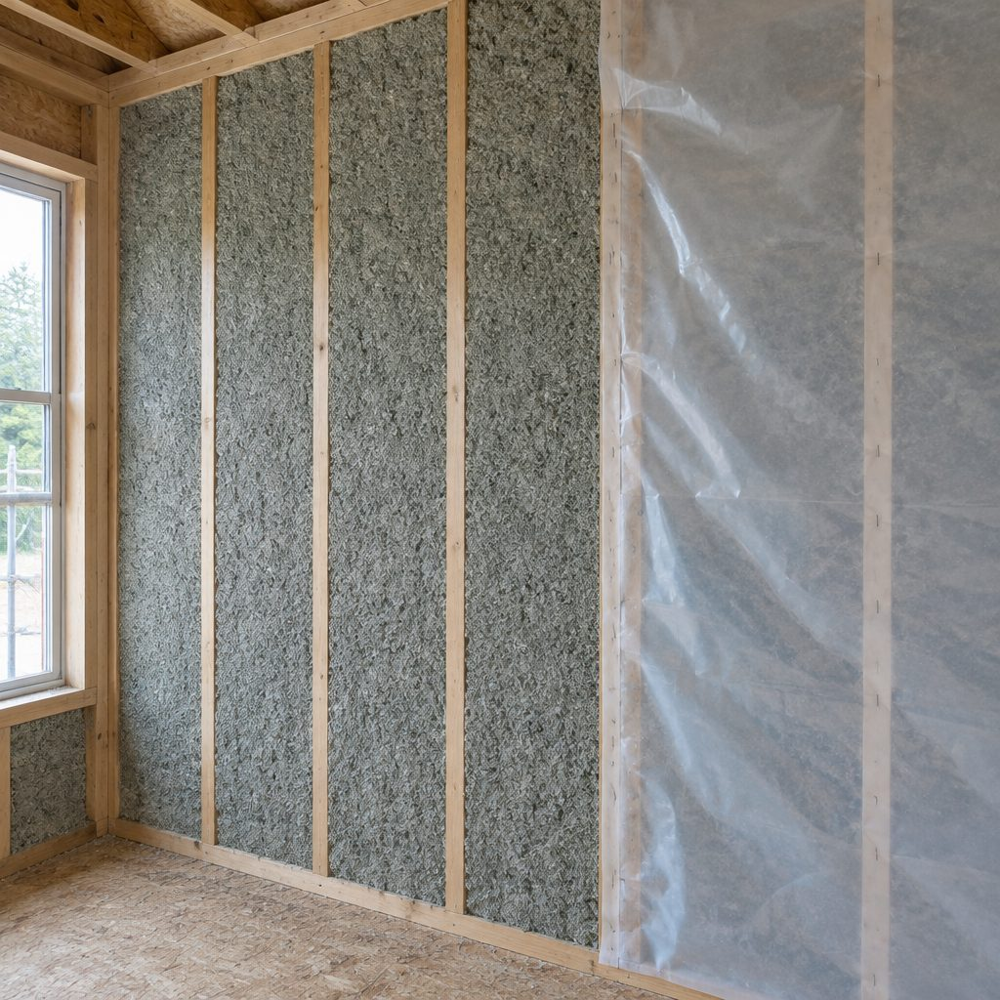

Стены
Стены холодные на ощупь, у плинтуса дует
Задуваем эковату в полость между стойками под давлением: плотность 55–65 кг/м³, материал расклинивается и не оседает. Плитный утеплитель так не может — он лежит кусками и оставляет зазоры.